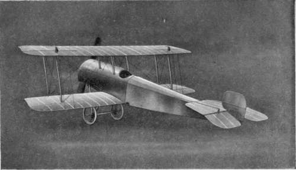
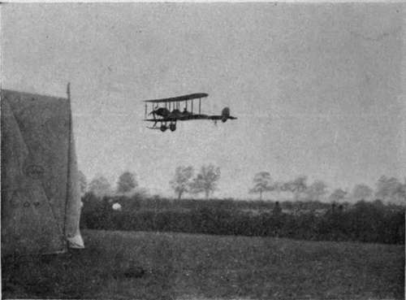
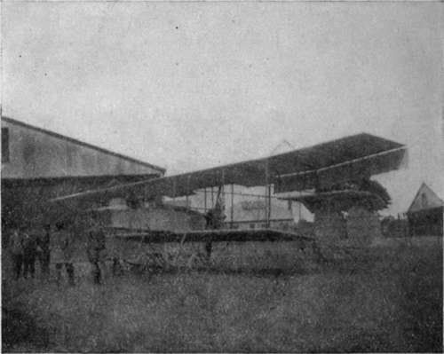

Flying Machines Of To-Day. Part 4
Description
This section is from the book "All About Flying", by Gertrude Bacon. Also available from Amazon: All About Flying.
Flying Machines Of To-Day. Part 4
One of the very earliest of this type was the French Breguet—a famous steel-built military machine that in its youthful days (and Breguet its inventor was quite one of the pioneers of flight) was known as the Flying Coffee Pot. In England the earliest tractor biplane was, I believe, the design of A. V. Roe—one of the first three men to fly in this country—whose earliest machine of all, a triplane, was the first ' all British' aeroplane to get off the ground. From that day onwards Roe has patiently won his way from one success to another, constantly producing new inventions which have afterwards been adopted far and wide, and at this moment his' Avroplanes' are some of the best flying machines in existence— swift and light, and, as we have seen, with a truly marvellous range of speed.
And the same may be said of the Sopwith and 'Bristol' tractor biplanes—children of the famous firms which have done more perhaps than any others to uphold the honour of the British manufacturer, against the world in general, and against their own countrymen, who liked to say that England lagged behind in aeroplane design, in particular.
Both in their larger machines constructed for one or more passengers beside the pilot, and in their small, immensely swift, single-seated 'Scouts,' they have studied military and naval requirements carefully and especially; as indeed have all aeroplane constructors, since it is as a machine for warfare that the aeroplane—at present at least—is in greatest demand.
Besides many aeroplanes bought from British and foreign manufacturers whose designs commended themselves to the authorities, the army possessed at the commencement of the War a large number of their own machines designed, though not all built, at the Royal Aircraft Factory at Farn-borough. On these a vast amount of military flying had already been done. The two most famous designs are those known as the 'B.E. 2,' and the more recent' R.E. 1 ' ; which last has aimed at, and secured, a very great measure of natural stability.
Bristol Scout.
A machine which can fly at 90 miles an hour, and yet slow down to not much over 30, which can keep in the air for three hours without coming down for fuel, and can be trusted almost to look after itself while aloft, seems an ideal craft for military purposes ; and there are quite a number of British tractor biplanes at the present time which fulfil all these conditions. In looking at some of the famous examples we may notice that the planes are 'staggered 'that is to say, the upper plane is mounted somewhat in advance of the lower one, the effect of which is to give the pilot a better view ; since bringing forward the upper plane means bringing forward the pilot's seat as well. Also we may see that the chassis wheels are covered in, to lessen the head resistance and keep grass and soil out of the spokes—a small matter, but characteristic of the care bestowed on every detail.
(The Aeroplane).
Even to enumerate the famous aeroplanes of the present day would take too long ; while to attempt to describe them in a little book of this size would be out of the question. The tens of thousands who weekly frequented the Hendon Aerodrome before the War are familiar with the splendid feats of the Grahame-White 'pusher' and tractor biplanes and huge five-seated 'char-a-bancs' ; the light, swift, extremely efficient Caudrons (whose tractor biplanes differ from most others in having tail booms instead of a covered-in body) ; the naturally stable Handley Page, easy to recognize because of its backward-swept crescent-shaped wings—all most successful machines.
The habitues of Brooklands know the Vicars and many other celebrated craft (some already referred to), who have their home and flying-ground within 'the track.' At Eastchurch and elsewhere the naval pilots daily attest the merits of the Short biplanes. Yorkshiremen are proud of their Blackburn hailing from Leeds. Many of us have Seen, and all of us have heard, of the Dunne 'inherent stability ' machine, whose unusual backward-sloping wings and absence of tail relegate it to a class of its own. Lieutenant Dunne is a pioneer who has been experimenting ever since (and some time before) the early days of 1909, when rumours first began to get about of mysterious happenings in the Highlands, and of secret flying among the lonely moors of Blair-Atholl. Working on lines entirely different from anybody else, Dunne has been a long time in bringing his schemes to fruition ; but those who have seen —at Hendon and elsewhere—the pilot of his strange broad-arrow biplane leave the controls and wander out on to the wing while the machine flies steadily in air the while, will testify to the progress he has made towards the natural stability he aims at. The ring-shaped Cedric Lee, known in pleasant aviation parlance as the 'dough-nut,' is another example of an attempt to win inherent stability by 'weird wings.'
(G. Bacon)
A Short Biplane.
Alas ! that we are never more to see—save at the South Kensington Museum where it is now removed Cody's 'Flying Cathedral'—the mighty biplane, most original in its design, reflecting its author's vigorous personality in all manner of 'Codyesque' touches, which to the British public was once the most popular aerial craft in existence from the point of view of the multitude. The excellence of the great machine was proved on numberless occasions, notably when it won the Michelin prizes, completed the Circuit of Britain, and beat the whole world in open competition at the Military Trials on Salisbury Plain in 1912. Alas ! Cody and his biplane have gone together, since the two could not be severed. It needed a Cody to pilot a 'Cody Flyer.'
Continue to: